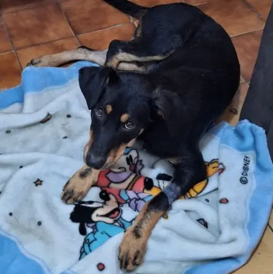
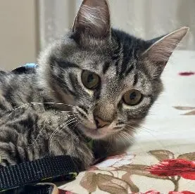
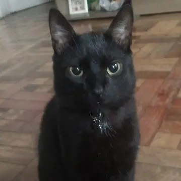

Em busca de um lar
Bento
2 anos · Macho🐾ONG responsávelInstituto Patinhas Felizes
Conectamos cães e gatos que precisam de um lar a pessoas prontas para transformar duas vidas: a deles e a sua.
Animais e ONGs de exemplo, usados para demonstrar a busca. Favoritos ficam salvos apenas nesta sessão.



Conheça a história de cada animal, converse com a ONG e siga as etapas do processo. Depois da adoção, mantenha a carteirinha de vacinação no Petlink: com registros conferidos por veterinário parceiro, você acessa benefícios nos estabelecimentos participantes.